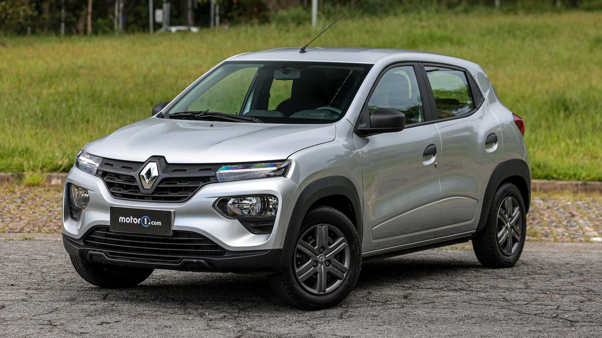
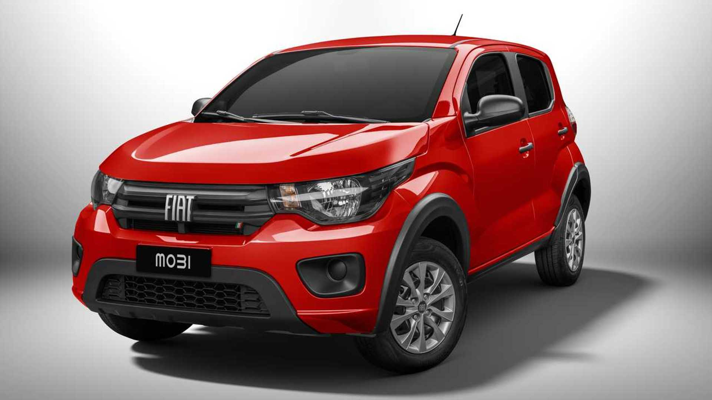
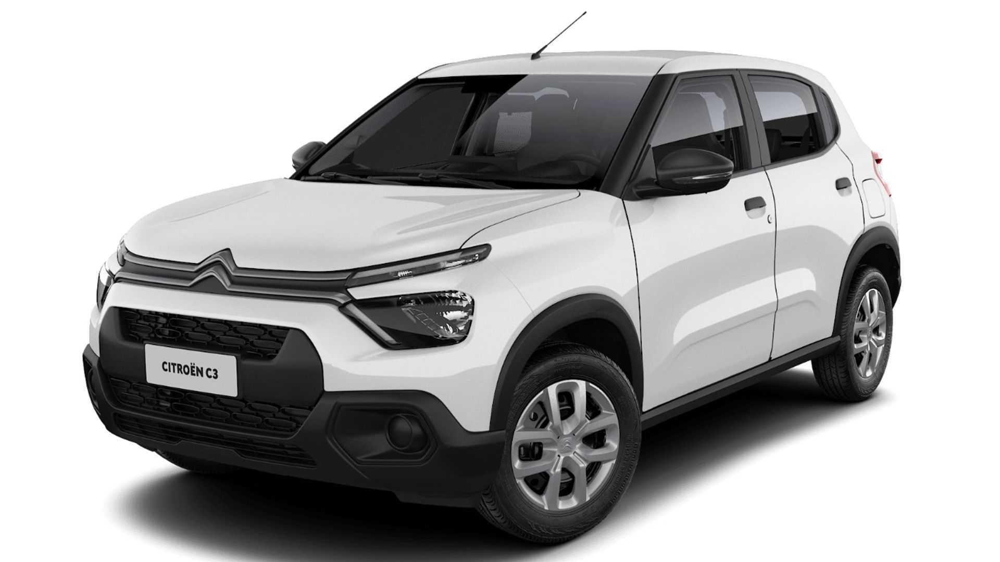
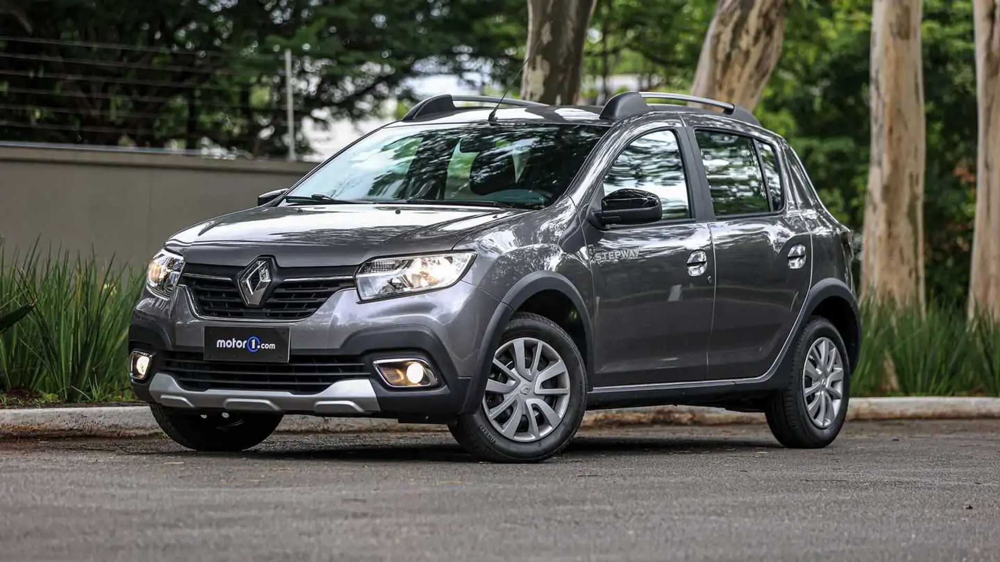
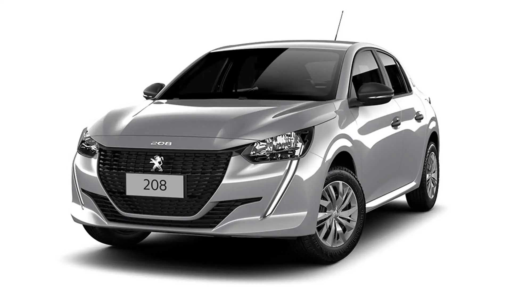

Carros mais baratos no Brasil
1° - Renault Kwid

-
Versão: Renault Kwid Zen 1.0
-
Preço: R$ 68.990
-
Motor: 1.0 SCe 12V
-
Câmbio: manual de 5 marchas
-
Potência e torque: 71 cv e 10 kgfm
O Renault Kwid segue no topo da lista dos 10 carros mais baratos do Brasil, apesar de estar empatado com o Fiat Mobi e isto é porque o preço aumentou recentemente. A versão Zen é a definição de configuração de entrada, trazendo poucos equipamentos. Conta com controles de estabilidade e tração, assistente de partida em rampas, direção elétrica, quatro airbags, monitoramento de pressão dos pneus, rádio com USB e Bluetooth, sistema start-stop e iluminação diurna em LED. Sob o capô está o motor 1.0 SCe 12V de três cilindros, que desde a reestilização entrega 71 cv e 10 kgfm, combinado a um câmbio manual de 5 marchas.
2° - Fiat Mobi

-
Versão: Fiat Mobi Like 1.0
-
Preço: R$ 68.990
-
Motor: 1.0 Fire 8V
-
Câmbio: manual de 5 marchas
-
Potência e torque: 74 cv e 9,7 kgfm
Existem poucos subcompactos no mercado brasileiro e o Fiat Mobi é um dos sobreviventes deste segmento. Durante boa parte de 2022, foi o carro mais barato do Brasil, embora que por uma diferença bem pequena em relação ao Renault Kwid. Só que o jogo mudou com um aumento de preços para o modelo ítalo-brasileiro, fazendo com que caísse para a 2ª posição. Não ajuda que é bem mais espartano, com direção hidráulica, ar-condicionado, rodas de aço com calotas, pré-disposição para rádio e vidros elétricos dianteiros. O motor é o velho conhecido 1.0 Fire 8V (o único carro da marca no país a ainda usar este propulsor), de 74 cv e 9,7 kgfm, sempre com um câmbio manual de 5 marchas.
3° - Citroen C3

-
Versão: Citroën C3 Live 1.0
-
Preço: R$ 72.990
-
Motor: 1.0 Firefly 6V
-
Câmbio: manual de 5 marchas
-
Potência e torque: 75 cv e 10,7 kgfm
A Citroën está em um processo de renovação, após alguns anos vendendo somente o C4 Cactus. O primeiro carro da nova linha da marca é o C3, que chegou para ser um dos carros mais baratos do mercado. Busca os clientes que até cogitam Kwid ou Mobi, mas com mais espaço. A versão Live vem com ar-condicionado, direção elétrica, controles de estabilidade e tração, assistente de partida em rampas, travas e vidros dianteiros elétricos, monitoramento de pressão dos pneus e rodas de aço de 15” com calotas. Sua motorização é formada pelo 1.0 Firefly de 75 cv e 10,7 kgfm da Fiat e a única opção de transmissão é a manual de 5 marchas.
4° - Renault Stepway

-
Versão: Renault Stepway Zen 1.0
-
Preço: R$ 79.990
-
Motor: 1.0 SCe 16V
-
Câmbio: manual de 5 marchas
-
Potência e torque: 82 cv e 10,2 kgfm
Com o fim do Sandero, a Renault optou por criar uma nova versão do Stepway chamada Zen para ocupar o espaço do hatchback. E, para conseguir ter mais volume, chegou por um preço bem mais baixo do que o resto da linha do aventureiro. Vira uma opção interessante por ser o primeiro da lista a ter uma central multimídia com Android Auto e Apple CarPlay ao invés de um rádio. Traz também ar-condicionado, direção eletro-hidráulica, vidros elétricos dianteiros e quatro airbags. Também ajuda ter um motor 1.0 mais potente do que o Kwid, com 82 cv e 10,5 kgfm, combinado a um câmbio manual de 5 marchas.
5º - Peugeot 208

- Versão: Peugeot 208 Like 1.0
- Preço: R$ 79.990
- Motor: 1.0 Firefly 6V
- Câmbio: manual de 5 marchas
- Potência e torque: 75 cv e 10,7 kgfm
Após a fusão do Grupo PSA com a Fiat-Chrysler, a Stellantis mudou o posicionamento do Peugeot 208 no mercado brasileiro, criando as versões com o motor 1.0 Firefly de 75 cv e 10,7 kgfm compartilhado com Argo e Cronos. Isto ajudou a posicionar o hatch na lista dos 10 carros mais baratos do Brasil e aumentar as vendas do veículo. É o último modelo a ficar abaixo dos R$ 80 mil, mas em compensação vem com uma boa lista de equipamentos, contando com quatro airbags, controles de estabilidade e tração, travas e vidros elétricos, central multimídia de 10,3” com Android Auto e Apple CarPlay sem fio, e iluminção diurna em LED.